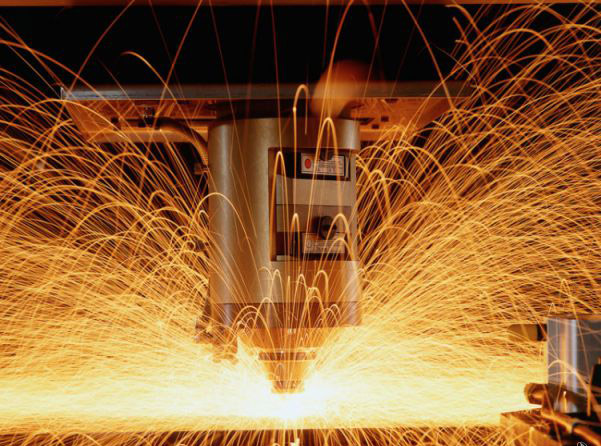
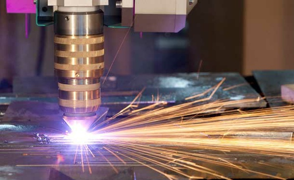

- Главная »
- Услуги »
- Резка металла »
- Плазменная резка металла
- Металлоконструкции
- Резка металла
- Плазменная резка металла
- Газокислородная резка металла
- Продольная резка металла
- Ленточнопильная резка металла
- Рубка металла гильотиной
- Художественная резка металла
- Фигурная резка металла
- Поперечная резка металла
- Продольно-поперечная резка металла
- Резка металла газом
- Гидроабразивная резка
- Лазерная резка металла
- Резка листового металла
- Резка по металлу
- Лазерная резка металла на заказ
- Резка металла по размерам заказчика
- Резка металла водой
- Резка металла пропаном и кислородом
- Электроэрозионная резка металла
- Цены на резку металла
- Струйная обработка металла
- Полировка металла до зеркального блеска
- Покраска металла
- Гибка металла
- Сверление отверстий в металле
- Изготовление деталей
- Токарные работы
- Сварка металла
- Производство стальных деталей
- Вальцовка листового металла
- Металлообработка ЧПУ
Плазменная резка металла
|
Плазменная резка металла |
|
| 1-2мм | 33руб/м |
| 3-4мм | 38руб/м |
| 5мм | 48руб/м |
| 6мм | 50руб/м |
| 8мм | 58руб/м |
| 10мм | 78руб/м |
| 12мм | 98руб/м |
| 14мм | 108руб/м |
| 16мм | 118руб/м |
Плазменная резка металла – эффективный способ раскроя
Для термического резания тугоплавких сплавов, нержавейки, легированной, конструкционной стали, чугуна применяется плазменная резка металла.
Благодаря своим преимуществам, она является достаточно распространенным способом обработки металла, позволяет:
- добиться отменного качества и высокой чистоты разрезаемой поверхности. Образующийся на кромках грат легко удалить;
- делать продольно-поперечную, сложную фигурную, любой геометрии вырезку;
- на малой и средней толщине получать значительную скорость разрезания и большую производительность работ при низком энергопотреблении, при повышении толщины производительность снижается;
- исключить тепловую деформацию и коробление заготовки вследствие максимальной локализации зоны нагрева и отсутствия предварительного нагревания металла;
- обеспечить безопасность процессов работы, потому что не используется сжатый кислород или горючие, взрывоопасные смеси, как при других методах резания;
- минимизировать потери металла благодаря маленькой ширине реза.
Как происходит резание плазмой
Плазменная резка металла проходит следующим образом:
- электрическая дуга (электрод – электропроводящая поверхность или электрод – сопло установки) зажигается с помощью высоковольтного импульса или к/з;
- в сопло устройства подается активный либо неактивный газ под огромным давлением, он обжимает электрическую дугу;
- дуга поджигает смесь и превращает ее в струю плазмы с температурой до 50000 градусов и скоростью 1500 м/с, которая является резцом. Участки реза нагреваются за счет температуры струи плазмы и энергии дуги.
Плазменная резка металла предусматривает использование различных смесей. Их выбор зависит от разрезаемого токопроводящего материала:
- активные (кислород либо воздух) для работы с углеродистой конструкционной сталью;
- инертные (азот, водяной пар, аргон, водород или их сочетание) – для сплавов, титана, латуни, бронзы, алюминия, меди.
Газы проходят сквозь плазмотрон, поглощают теплоту, отдают ее в зоне реза. Выбор газа либо смеси газов зависит от материала, который обрабатывают. Так можно оптимизировать процесс резки, сделать его более экономичным, но достигать лучшего результата.
Способы охлаждения форсунок:
- воздушное, когда применяют один из газов либо их сочетание (один режет, второй защищает участок резки);
- жидкостное, с ним получается рез улучшенного качества. Охлаждение жидкостью применяются в мощных устройствах.
Станок плазменной резки металла – это стационарное устройство. Различные модели имеют числовое программное управление или без него, отличаются размерами рабочей области, номинальным током, скоростью и толщиной резания. Они оснащены дополнительно оборудованием для снятия фасок, температура на участке нагрева контролируется датчиком слежения. Координатный стол раскроя оборудован воздуховодом, необходимым для отведения дыма из рабочей зоны. Применяются при резке листового или трубного проката.
Аппарат плазменной резки металла – переносное портативное устройство,предназначен для автоматического или ручного раскроя даже в полевых условиях. Устройства различаются потребляемой мощностью, величиной сварочного тока и, соответственно, толщиной металлической заготовки, которую можно резать. При ручном резании используется один газ (воздух или азот).
Следовательно, для плазменной резки металла необходимы аппарат или станок, электричество, сжатый газ (азот в баллоне или воздух из магистрали, компрессора), сопла, электроды, которые являются расходными материалами.
При плазменной резке режущим инструментом выступает струя плазмы с высокой температурой. Такая струя способна резать цветные и черные металлы до 20 см толщиной. Плазменная резка, как правило, производится на станках с ЧПУ.
Подобные станки способны резать металл по предварительно заданной программе с четкими параметрами и условиями выполнения работы. Наряду с высокой эффективностью, плазменная резка на таких станках обеспечивает наивысший уровень безопасности, при условии соблюдения техники безопасности работы с плазмой.
Что касается ручной резки при помощи плазмы, то точность тут гораздо ниже. Однако ручная резка, услуги которой мы предоставляем, обладает и рядом преимуществ. Агрегаты для ручного типа резки имеют небольшой размер и вес, что обеспечивает мобильность и легкость их транспортировки в те места, где стационарная резка на станке не представляется возможной.
Главные преимущества
Метод резки металла при помощи плазмы технически совершенен и позволяет работать практически с любыми металлами. Такая популярность плазменной резки обусловлена рядом критических преимуществ перед старыми консервативными методами инструментальной резки.
Главные преимущества услуги плазменной резки от нашей компании:
- универсальность метода (может быть применен при работе практически с любыми сплавами и металлами);
- скорость;
- срез, образующийся в процессе резки, имеет высокое качество поверхности и чистоту;
- отсутствие каких-либо ограничений по сложности форм обрабатываемых деталей.
Благодаря плазменной резке вы также сэкономите время. Для полноты реализации всех преимуществ плазменной резки режимы работы станков и устройств должны быть подобраны четко в соответствии с характеристиками обрабатываемого материала.
Применяя плазменную резку, важно взять в расчет следующие факторы:
- толщину обрабатываемого материала,
- свойства материала,
- скорость резки,
- температуру и скорость плазмы.
Высокое качество и скорость осуществления плазменной резки главным образом зависят от правильного подбора перечисленных выше параметров работы.
Наше предприятие предоставляет услуги плазменной резки по доступной цене, которая в разы ниже цен наших конкурентов, а качество исполняемых работ нашей компании находится на самом высоком уровне. Закажите данную услугу, сэкономив свое время и средства.